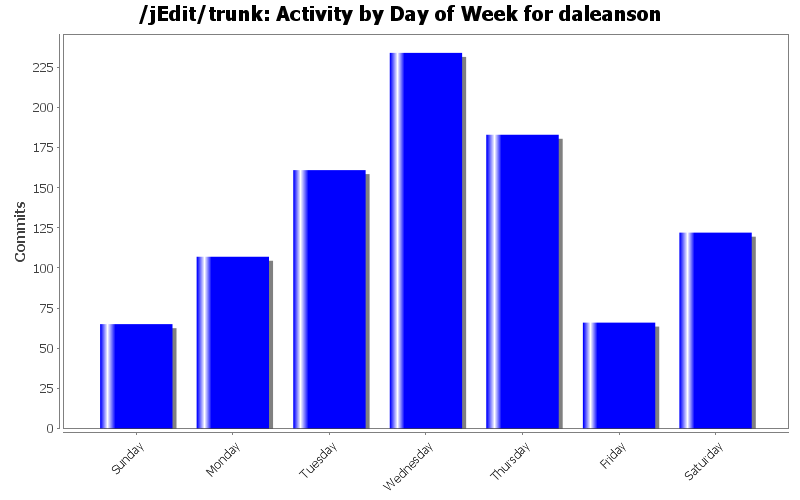
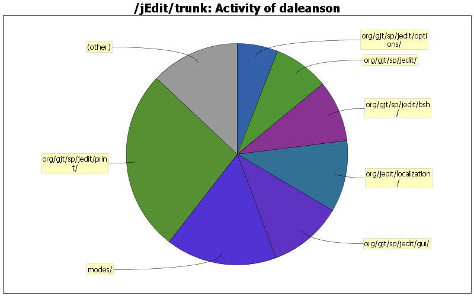

| Directory | Changes | Lines of Code | Lines per Change |
|---|---|---|---|
| Totals | 938 (100.0%) | 28418 (100.0%) | 30.2 |
| org/gjt/sp/jedit/print/ | 136 (14.5%) | 7543 (26.5%) | 55.4 |
| modes/ | 62 (6.6%) | 4600 (16.2%) | 74.1 |
| org/gjt/sp/jedit/gui/ | 123 (13.1%) | 3090 (10.9%) | 25.1 |
| org/jedit/localization/ | 25 (2.7%) | 2948 (10.4%) | 117.9 |
| org/gjt/sp/jedit/bsh/ | 50 (5.3%) | 2564 (9.0%) | 51.2 |
| org/gjt/sp/jedit/ | 155 (16.5%) | 2292 (8.1%) | 14.7 |
| org/gjt/sp/jedit/options/ | 53 (5.7%) | 1700 (6.0%) | 32.0 |
| org/gjt/sp/jedit/textarea/ | 47 (5.0%) | 683 (2.4%) | 14.5 |
| macros/Java/ | 8 (0.9%) | 484 (1.7%) | 60.5 |
| doc/users-guide/ | 16 (1.7%) | 373 (1.3%) | 23.3 |
| org/gjt/sp/jedit/syntax/ | 14 (1.5%) | 343 (1.2%) | 24.5 |
| org/gjt/sp/jedit/search/ | 14 (1.5%) | 288 (1.0%) | 20.5 |
| doc/ | 91 (9.7%) | 279 (1.0%) | 3.0 |
| org/gjt/sp/jedit/pluginmgr/ | 22 (2.3%) | 223 (0.8%) | 10.1 |
| macros/Editing/ | 16 (1.7%) | 150 (0.5%) | 9.3 |
| org/gjt/sp/jedit/bsh/classpath/ | 6 (0.6%) | 120 (0.4%) | 20.0 |
| org/gjt/sp/util/ | 12 (1.3%) | 114 (0.4%) | 9.5 |
| org/gjt/sp/jedit/msg/ | 3 (0.3%) | 108 (0.4%) | 36.0 |
| org/gjt/sp/jedit/gui/statusbar/ | 3 (0.3%) | 108 (0.4%) | 36.0 |
| org/gjt/sp/jedit/bufferset/ | 5 (0.5%) | 89 (0.3%) | 17.8 |
| org/gjt/sp/jedit/buffer/ | 9 (1.0%) | 85 (0.3%) | 9.4 |
| org/gjt/sp/jedit/bsh/collection/ | 2 (0.2%) | 63 (0.2%) | 31.5 |
| org/gjt/sp/jedit/browser/ | 16 (1.7%) | 43 (0.2%) | 2.6 |
| org/gjt/sp/jedit/help/ | 5 (0.5%) | 22 (0.1%) | 4.4 |
| org/gjt/sp/jedit/io/ | 3 (0.3%) | 16 (0.1%) | 5.3 |
| org/jedit/options/ | 3 (0.3%) | 15 (0.1%) | 5.0 |
| org/gjt/sp/jedit/input/ | 4 (0.4%) | 14 (0.0%) | 3.5 |
| / | 6 (0.6%) | 14 (0.0%) | 2.3 |
| build-support/ | 2 (0.2%) | 13 (0.0%) | 6.5 |
| org/gjt/sp/jedit/menu/ | 5 (0.5%) | 12 (0.0%) | 2.4 |
| org/gjt/sp/jedit/bufferio/ | 2 (0.2%) | 8 (0.0%) | 4.0 |
| org/jedit/keymap/ | 2 (0.2%) | 6 (0.0%) | 3.0 |
| org/jedit/core/ | 1 (0.1%) | 4 (0.0%) | 4.0 |
| org/gjt/sp/jedit/bsh/org/objectweb/asm/ | 1 (0.1%) | 3 (0.0%) | 3.0 |
| macros/Misc/ | 1 (0.1%) | 1 (0.0%) | 1.0 |
| org/gjt/sp/jedit/icons/themes/tango/22x22/actions/ | 1 (0.1%) | 0 (0.0%) | 0.0 |
| org/gjt/sp/jedit/icons/themes/classic/22x22/actions/ | 1 (0.1%) | 0 (0.0%) | 0.0 |
| macros/Text/ | 8 (0.9%) | 0 (0.0%) | 0.0 |
| macros/Properties/ | 1 (0.1%) | 0 (0.0%) | 0.0 |
| macros/Files/ | 1 (0.1%) | 0 (0.0%) | 0.0 |
| macros/Clipboard/ | 2 (0.2%) | 0 (0.0%) | 0.0 |
| macros/C/ | 1 (0.1%) | 0 (0.0%) | 0.0 |

Fixed issue where print system would show an error if the last used printer no longer exists.
1 lines of code changed in 1 file:
Updates for Java 11: check for and require Java 11 on start up, require Java 11 in build.xml, fixed Java 11 compiler warnings (mostly deprecation annotations).
33 lines of code changed in 9 files:
Feature request #545, HL7 mode.
97 lines of code changed in 3 files:
Should have been committed with revision 24905.
421 lines of code changed in 1 file:
Reverting inadvertent checkin.
1 lines of code changed in 1 file:
Feature request #528, PlantUML mode.
0 lines of code changed in 3 files:
Fix for bug # 4081, file browser splitter buttons not working
0 lines of code changed in 2 files:
Fix for bug # 4073, corrected location of context menu popup.
0 lines of code changed in 2 files:
Added a check suggested by Marcelo so that no file is a backup file if the number of backups is 0.
0 lines of code changed in 1 file:
Fixed a bug introduced in revision 24874 that gave false positives when determining backup files.
18 lines of code changed in 1 file:
Updated Java mode to support Java 10 "var" type.
4 lines of code changed in 2 files:
Updated Appearance option pane to allow setting "primary" and "secondary" fonts for all look and feels.
62 lines of code changed in 2 files:
Updated gui props for Taiwan Chinese.
3 lines of code changed in 1 file:
Patch # 620, Chinese Taiwan localization from David Day.
2710 lines of code changed in 2 files:
Added property to turn on use of the RolloverToggleButton, set use.rolloverToggleButtons to true to use them instead of regular JToggleButtons.
10 lines of code changed in 1 file:
Possible fix for bug # 2722, dockable buttons don't highlight on mouseover.
165 lines of code changed in 2 files:
Fix for bug # 2719, electric scroll not working with page up/down.
5 lines of code changed in 2 files:
Fix for bug # 2626, dockable buttons don't wrap correctly
10 lines of code changed in 2 files:
Fix for Bug # 2412, preview javadoc macro npe.
8 lines of code changed in 2 files:
Fix for bug # 4055, use default text area background and foreground colors rather than view bg and fg colors.
5 lines of code changed in 2 files:
(282 more)